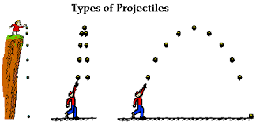

1601 Lab 4
Online textbook: bookshelf.vitalsource.com
iOLab for Scientists and Engineers
Lab 3: Force and Acceleration
You will need:
- IOLab device (+included attachments)
- USB-A connection
- Smooth table
- Heavy weight (placeholder)
Leftover comments from Lab 3
- Include name of lab partners
- Don't worry too much about formatting
- Spend more time on data/understanding than perfecting your report
Questions 4–6

https://www.mwit.ac.th/~physicslab/applet_04/physics_classroom/Class/vectors/u3l2a.html
To be completed
- Follow along online lab manual. Complete "Lab 3"
- Submit a report to Brightspace